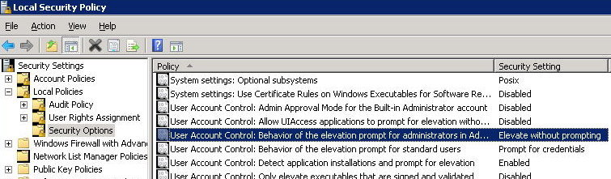

To view or adjust the settings for UAC, type secpol.msc into Start-Run to open the Local Security Policy snap-in.
Expand the Local Polices→Security Options folder.
Scroll down to
"User Account Control: Behaviour of the elevation prompt for administrator"
Double click and set to: "Elevate without prompting".
Then Restart the computer.

Alternatively this can be set in the registry (then reboot to apply)
Regedit script:
Windows Registry Editor Version 5.00 [HKEY_LOCAL_MACHINE\SOFTWARE\Microsoft\Windows\CurrentVersion\Policies\System] "ConsentPromptBehaviorAdmin"=dword:00000000
Or with Powershell:
PS HKLM:\> New-ItemProperty "HKLM:\SOFTWARE\Microsoft\Windows\CurrentVersion\Policies\System" -Name "ConsentPromptBehaviorAdmin" -Value 00000000 -PropertyType "DWord"
Setting "Elevate without prompting' as above will not completely disable UAC, it just removes the annoying popup prompts.
To disable UAC entirely, disable the setting:
User Account Control: Run all administrators in Admin Approval Mode
"EnableLUA"=dword:00000000
This is not recommended as it will compromise security.
“The secret of Happiness is Freedom, and the secret of Freedom, Courage” ~ Thucydides
Related
Elevation - Run with elevated permissions
Other UAC Group Policy Settings with Registry Keys.